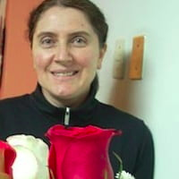

Home
About Me
Hello! My name is Anna Karpova de Nuñez, and I am from Lima, Perú. I enjoy playing volleyball, growing plants, listening to music, and cooking. My hobby is embroidering in cross-stitch because it is simple and relaxing.
Student Photo
